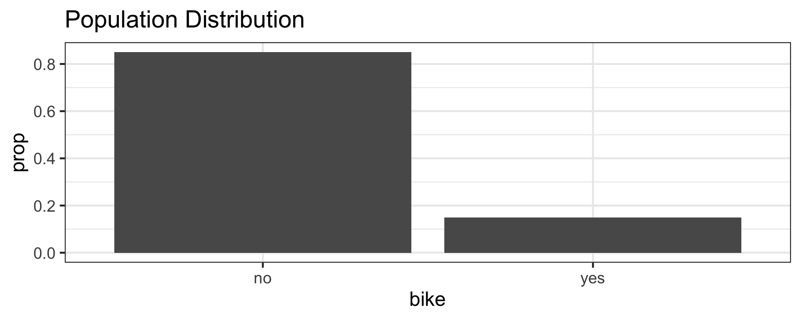
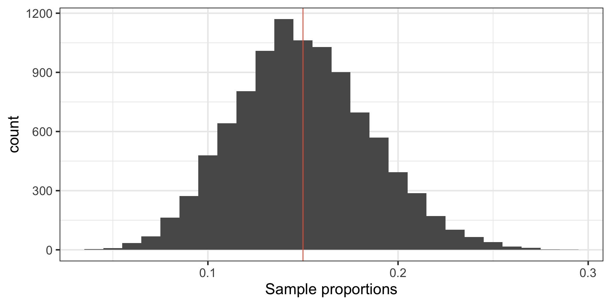
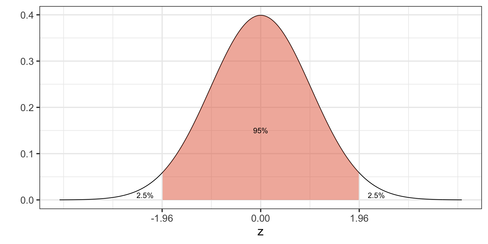
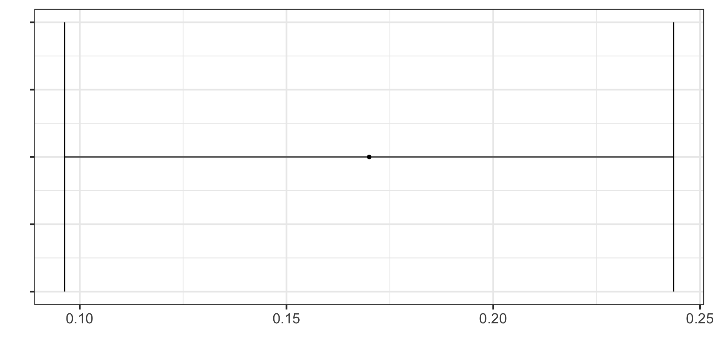
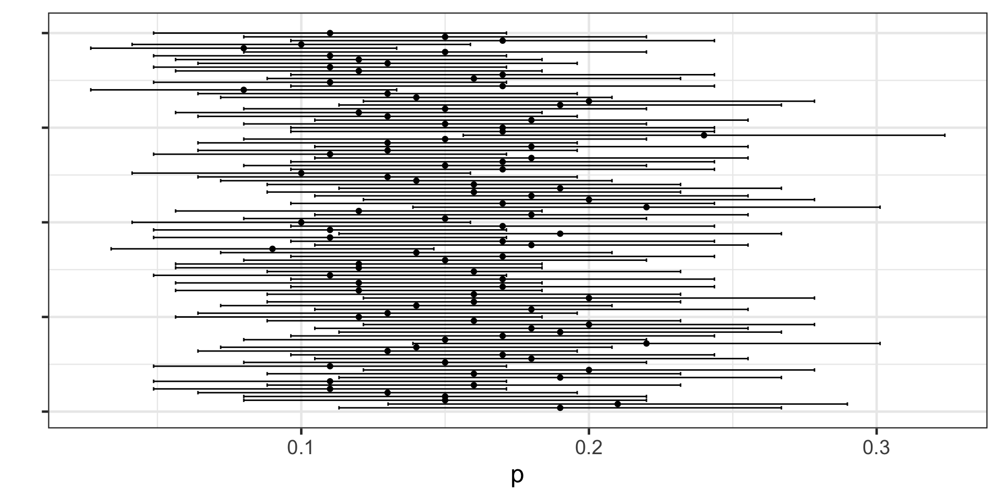
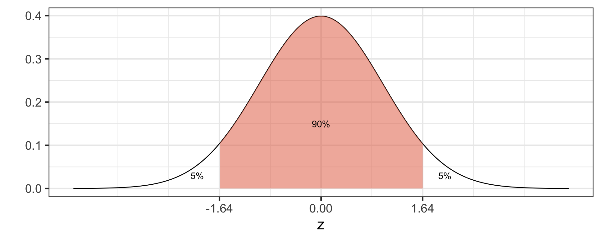
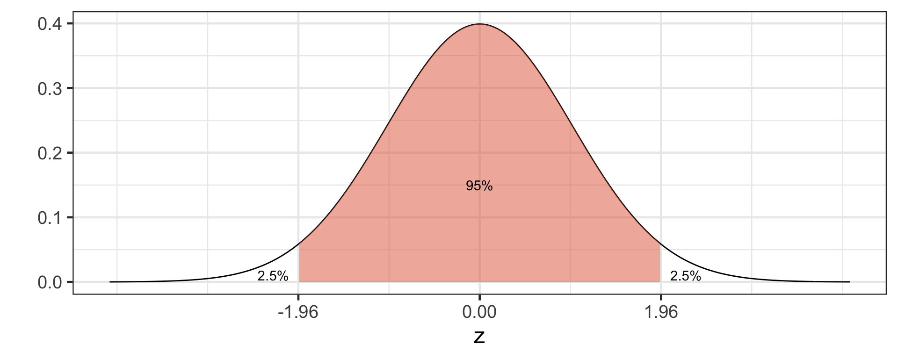
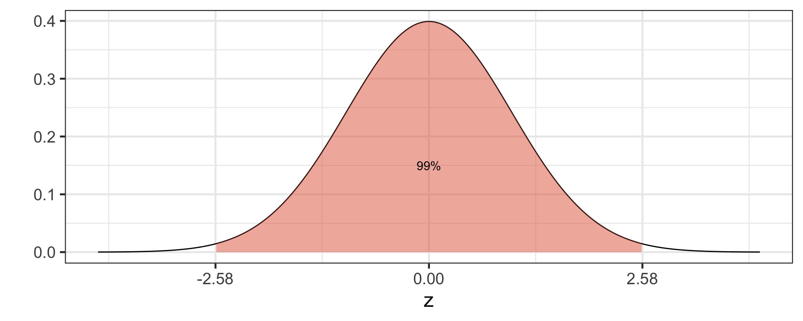
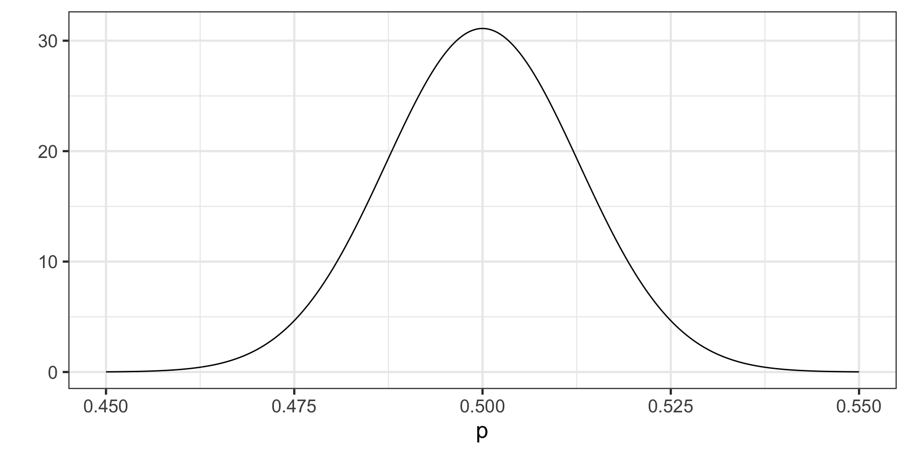
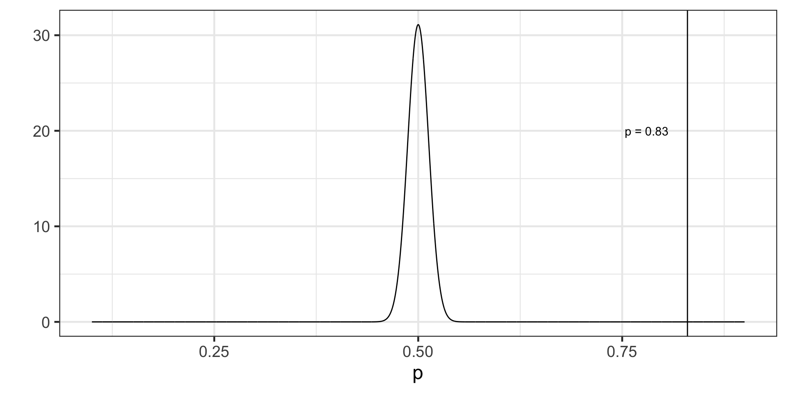

[1] 0.17Introduction to Frequentist Inference
Inference for a Proportion
Dr. Mine Dogucu
Central Limit Theorem Review
Remembering CLT
Let \(\pi\) represent the proportion of bike owners on campus then \(\pi =\) 0.15.
Getting to sampling distribution of a proportion
\(p_1\) - Proportion of first sample (n = 100)
\(p_2\) -Proportion of second sample (n = 100)
[1] 0.12\(p_3\) -Proportion of third sample (n = 100)
[1] 0.14Sampling Distribution of a Proportion
If certain conditions are met then
\[p \sim \text{approximately } N(\pi, \frac{\pi(1-\pi)}{n})\]
Confidence Interval for a Proportion
In Reality
- We only have one sample and thus one point estimate of the population parameter. How can make use of it?
- First we will assume the sample proportion is the best thing we have at hand and use it as a point estimate of the population proportion.
- Second, even though we embrace the sample proportion as a point estimate of the population proportion, we will need to acknowledge that it has some error.
Standard Error
\(p \sim \text{approximately } N(\text{mean} = \pi, \text{sd} = \sqrt{\frac{\pi(1-\pi)}{n}})\)
We call the standard deviation of the sampling distribution standard error of the estimate.
Standard error of a proportion is \(\sqrt{\frac{p(1-p)}{n}}\).
Confidence Interval
CI = \(\text{point estimate} \pm \text { margin of error}\)
CI = \(\text{point estimate} \pm \text { critical value} \times \text{standard error}\)
CI for a proportion = \(p \pm \text {critical value} \times \text{standard error}\)
CI for a proportion = \(p \pm \text {critical value} \times \sqrt{\frac{p(1-p)}{n}}\)
95% CI for a proportion = \(p \pm 1.96 \times \sqrt{\frac{p(1-p)}{n}}\) because …
95% of the data falls within 1.96 standard deviations in the normal distribution.
How do we know that?
95% CI for the first sample
Recall \(p = 0.17\) and \(n = 100\)
95% CI for a proportion = \(p \pm 1.96 \times \sqrt{\frac{p(1-p)}{n}}\)
95% CI = \(0.17 \pm 1.96 \times \sqrt{\frac{0.17(1-0.17)}{100}}\)
95% CI = \(0.17 \pm 1.96 \times 0.03756328\)
95%CI = \(0.17 \pm 0.07362403\)
95%CI = (0.09637597, 0.243624)
95% CI for the first sample
95%CI = (0.09637597, 0.243624)
We are 95% confident that the true population proportion of bike owners is in this confidence interval.
95%CI = (0.09637597, 0.243624)
Understanding Confidence Intervals
I have taken 100 samples with \(n = 100\), calculated the sample proportion, standard error, and 95% CI interval for each sample
# A tibble: 100 × 4
p SE lower_bound upper_bound
<dbl> <dbl> <dbl> <dbl>
1 0.19 0.0392 0.113 0.267
2 0.21 0.0407 0.130 0.290
3 0.15 0.0357 0.0800 0.220
4 0.15 0.0357 0.0800 0.220
5 0.13 0.0336 0.0641 0.196
6 0.11 0.0313 0.0487 0.171
7 0.16 0.0367 0.0881 0.232
8 0.11 0.0313 0.0487 0.171
9 0.19 0.0392 0.113 0.267
10 0.16 0.0367 0.0881 0.232
# ℹ 90 more rowsUnderstanding Confidence Intervals
Understanding Confidence Intervals

Confidence Interval Width
Which of the following confidence intervals would be the widest? Why?
- 90% CI
- 95% CI
- 99% CI
CI = \(\text{point estimate} \pm \text { critical value} \times \text{standard error}\)
CI = \(\text{point estimate} \pm \text { critical value} \times \text{standard error}\)
CI = \(\text{point estimate} \pm \text { critical value} \times \text{standard error}\)
CI = \(\text{point estimate} \pm \text { critical value} \times \text{standard error}\)
- 99% CI has the highest critical value.
- Higher critical value means higher margin of error.
- Higher margin of error means wider CI.
Thus 99% CI would be the widest.
Effect of Sample Size on Confidence Interval
Researchers A, B, and C are interested in proportion of bike ownership took samples. They each take separate samples of size 100, 500, and 1000 respectively. They each have a sample proportion of 0.18. What a surprise! Which of the researchers will find the narrowest 95% CI?
Researcher A: 95% CI for a proportion = \(0.18 \pm 1.96 \times \sqrt{\frac{0.18(1-0.18)}{100}}\)
Researcher B: 95% CI for a proportion = \(0.18 \pm 1.96 \times \sqrt{\frac{0.18(1-0.18)}{500}}\)
Researcher C: 95% CI for a proportion = \(0.18 \pm 1.96 \times \sqrt{\frac{0.18(1-0.18)}{1000}}\)
As sample size increases, the standard error decreases and the margin of error also decreases, thus the confidence interval interval gets narrower. The Researcher C would have the narrowest CI.
CLT
If these conditions are met then
\(p \sim \text{approximately } N(\pi, \frac{\pi(1-\pi)}{n})\)
Conditions
- The sample data are independent.
- There needs to be at least 10 successes and 10 failures in the sample.
- The sample size is smaller than 10% of the population.
Example
According to a Gallup Survey of 1017 adults living in US 66% of Americans favor legalizing marijuana.
Compute 95% confidence interval for the population proportion of those who favor legalizing marijuana.
Information on the survey can be found here
Checking Conditions
\(n = 1017\) and \(p = 0.66\)
- The survey link indicates that the respondents were chosen from a random sample. We would expect such sample to be independent.
- We need at least 10 people favoring legalizing marijuana and 10 people opposing this.
\(np = 1017 \cdot 0.66 = 671.22\). There are more than 10 people favoring legalizing marijuana. \(n(1-p) = 1017 \cdot (1-0.66) = 345.78\). There are more than 10 people opposing legalizing marijuana.
- 1017 is less than 10% of US population.
Confidence Interval
CI = \(\text{point estimate} \pm \text { margin of error}\)
CI = \(\text{point estimate} \pm \text { critical value} \times \text{standard error}\)
95% CI for a proportion = \(p \pm 1.96 \times \sqrt{\frac{p(1-p)}{n}}\)
95% CI = \(0.66 \pm 1.96 \times \sqrt{\frac{0.66(1-0.66)}{1017}}\)
95% CI = (0.6308857, 0.6891143)
We are 95% confident that the true proportion of Americans who support legalizing marijuana falls between 0.6308857 and 0.6891143.
Confidence Interval Using R
Hypothesis Testing for a Proportion
Review of Hypothesis Testing
- We always assume the null hypothesis is true at the beginning.
- We look for evidence against the null.
- If we find any evidence against the null (e.g. a single pink cow) then we can conclude null is false. We say we reject the null hypothesis.
If we do not find any evidence against the null (a single pink cow) then we fail to reject the null. We can keep searching for more evidence against the null (i.e. continue looking for a pink cow). We will never be able to say the null is true so we never accept the null. We fail to reject the null. All we can do is keep looking for a pink cow.
We are searching for evidence against the null. We are searching for evidence in the sample that may serve as an evidence against the null.
Research Question
Do the majority of Americans approve allowing DACA immigrants to become citizens?
Hypotheses
\(H_0: \pi \leq 0.5\)
\(H_A: \pi > 0.5\)
Assuming \(H_0\) is True
Recall that according to CLT \(p \sim \text{approximately }N(\pi, \frac{\pi(1-\pi)}{n})\)
If \(H_0: \pi = 0.5\) then the null sampling distribution would be \(N(0.5, \frac{0.5(1-0.5)}{n})\)
Looking for Evidence
According to a Gallup survey of 1520 US adults , 83% approve of allowing DACA immigrants to become citizens.
\(p = 0.83\)
\(n = 1520\)
We said that the null sampling distribution would be \(N(0.5, \frac{0.5(1-0.5)}{n})\) which is
\(N(0.5, \frac{0.5(1-0.5)}{1520})\)
\(N(0.5, 0.0001644737)\)
The \(H_0\) Sampling Distribution
What counts as evidence against the null?
Any sample proportion that falls of really far away from the center of the distribution would count as an evidence against the null.
If the null is true, then it would be unlikely to observe extremely high or low sample proportions.
Sampling Distribution
We want to know the probability of observing an extreme sample proportion like ours (p = 0.83) if the \(H_0\) were true.
If our sample proportion is “extreme” then so is 0.90, 0.91, 0.917, 0.9273423 etc.
If the \(H_0\) is true what is the probability that we will observe an extremely high sample proportion?
Probability of observing sample proportion of 0.83 and higher
P-value is the probability of observing a sample statistic at least as extreme as the one that has been observed if the null hypothesis were true.
If p-value is less than 0.05 we reject the null hypothesis.
Decision and Conclusion
In the Gallup survey the sample proportion was 0.83.
If the null hypothesis ( \(H_0 = \pi = 0.5\) ) were true, then it would be quite unlikely (p = \(2.594241 \times 10^{-146}\)) to observe a sample proportion that is at least extreme like the one we observed. We consider this “quite unlikely” since p < 0.05.
Since we have observed the sample proportion of 0.83 then we reject the \(H_0\).
We conclude that the population proportion of Americans who approve allowing DACA immigrants to become citizens is higher than 0.5.
Conditions
Gallup website indicates that the sample was randomly selected. We will assume independence.
1520 < 10% US Population
Steps of Hypotheses Testing
- Set hypotheses
- Identify Sampling Distribution of \(H_0\)
- Calculate p-value
- Make a Decision and a Conclusion.